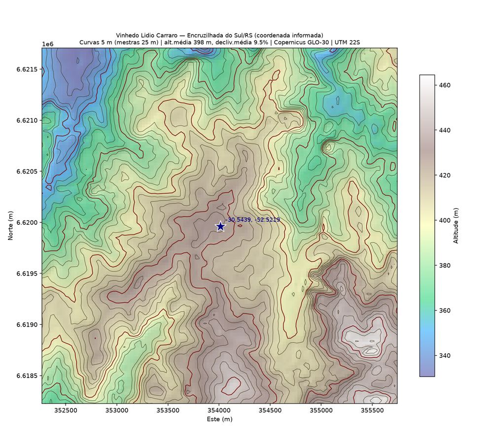
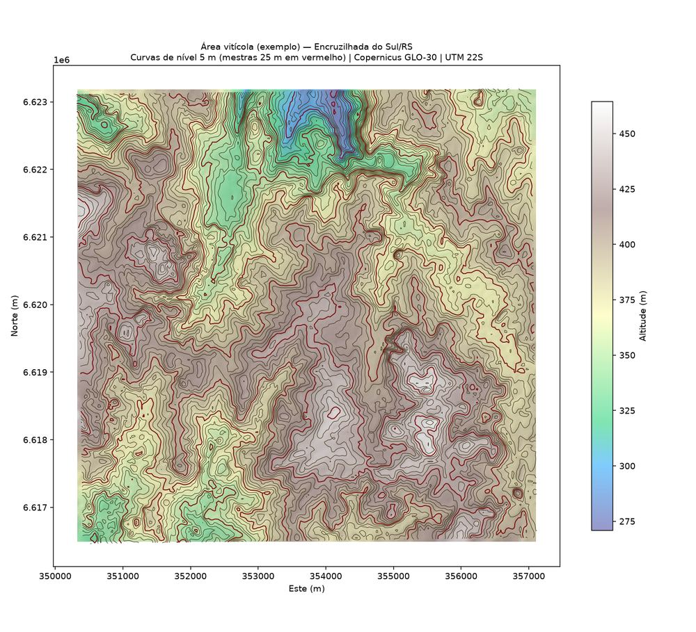
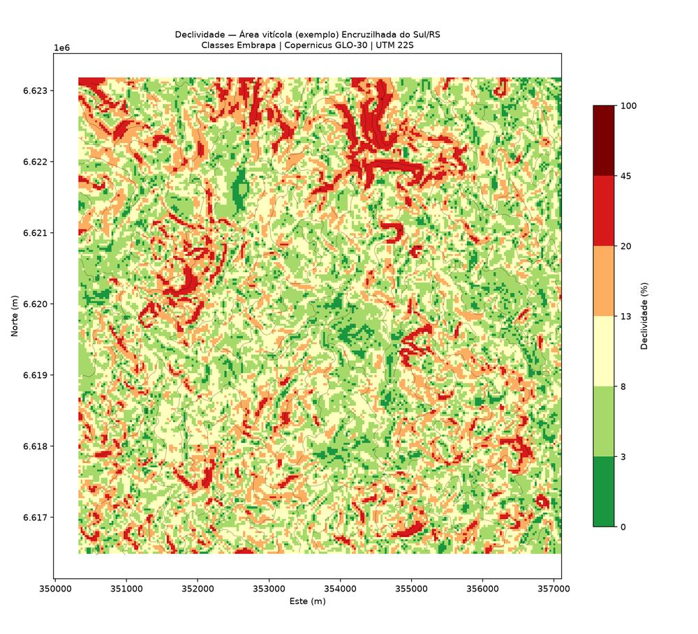
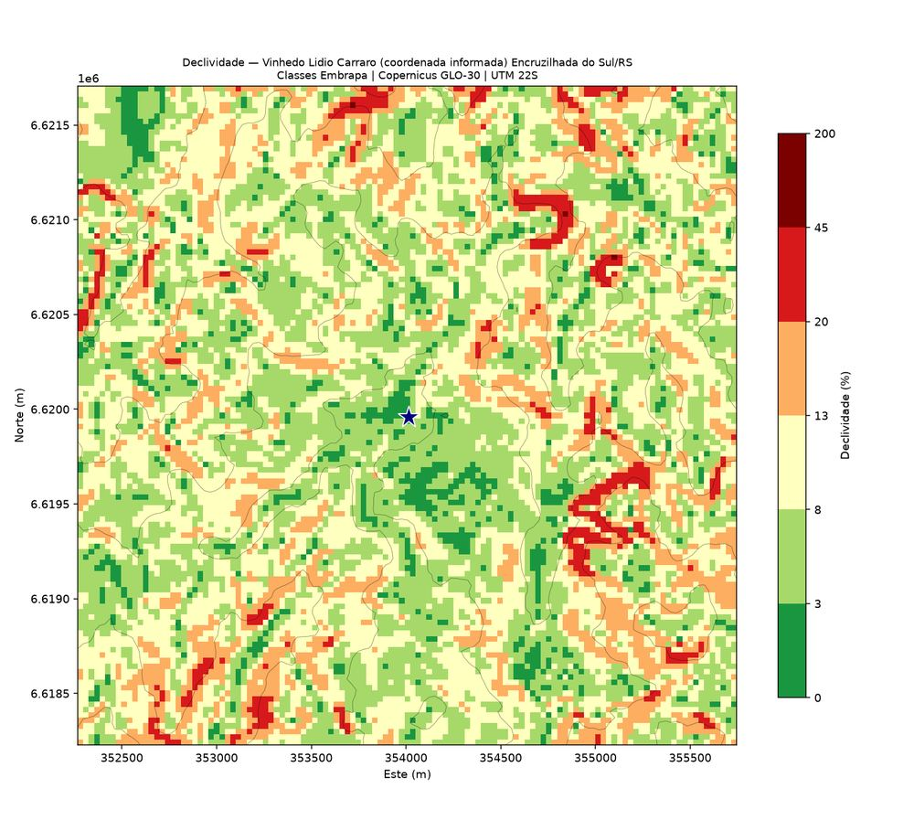
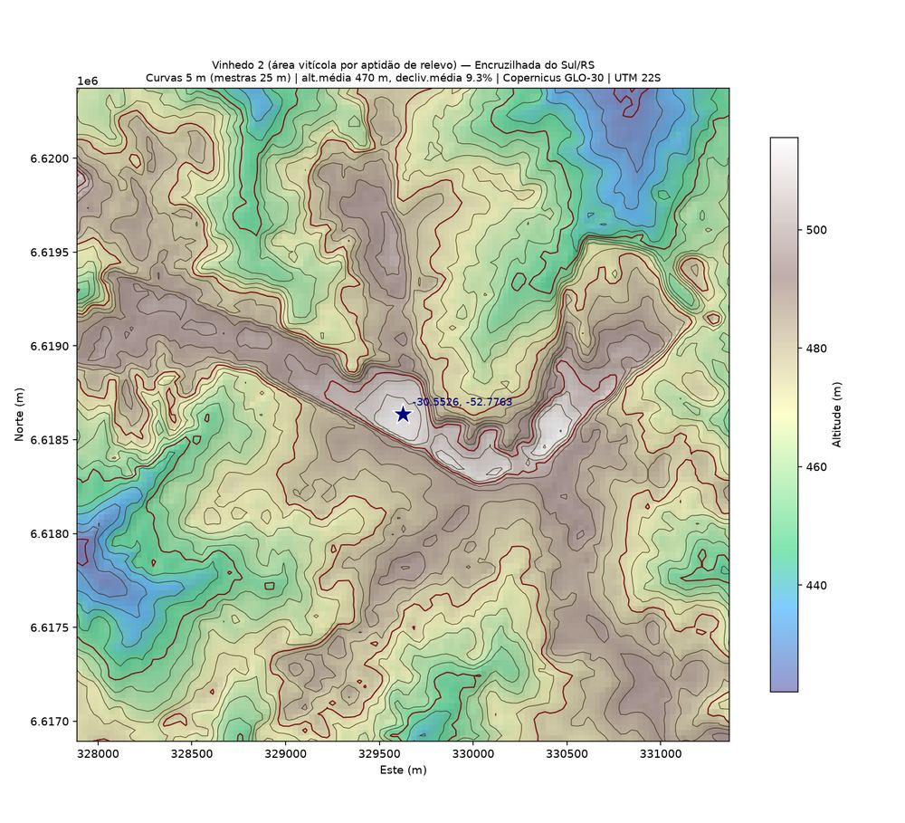
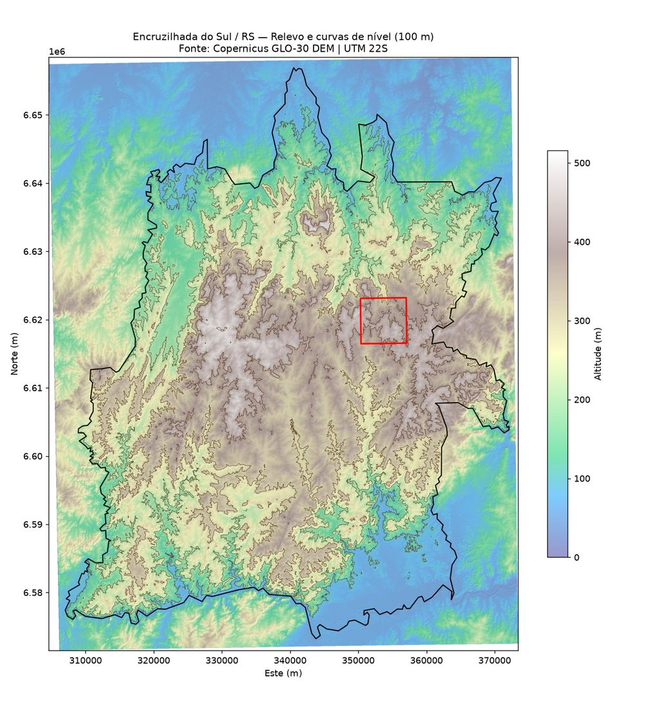

O XSmart AgroLab transforma dados de elevação em mapas de curvas de nível, declividade e relevo — informação prática para planejar plantio, manejo do solo e vinhedos com precisão.

Somos um laboratório de agricultura inteligente (smart agro) dedicado a transformar modelos digitais de elevação em informação útil para produtores rurais e vinícolas: curvas de nível, mapas de declividade e relevo sombreado, gerados a partir de dados públicos de sensoriamento remoto.
Nosso trabalho apoia o planejamento de plantio em nível, terraceamento, escolha de áreas com melhor aptidão e manejo sustentável do solo — com métodos reprodutíveis e abertos.
Análises geoespaciais aplicadas à agricultura de precisão e à viticultura.
Geração de curvas de nível em qualquer equidistância, a partir de modelos digitais de elevação (MDE).
Classificação do terreno por faixas de declividade (Embrapa), para apoiar decisões de manejo do solo.
Visualização tridimensional do relevo para leitura rápida da topografia de talhões e vinhedos.
Identificação de áreas com melhor combinação de altitude e declividade para novos plantios.
Exemplos reais de curvas de nível e declividade em vinhedos.





Siga @xsmartagrolab no Instagram para acompanhar bastidores, mapas e novidades sobre agricultura de precisão.
📷 Seguir @xsmartagrolab